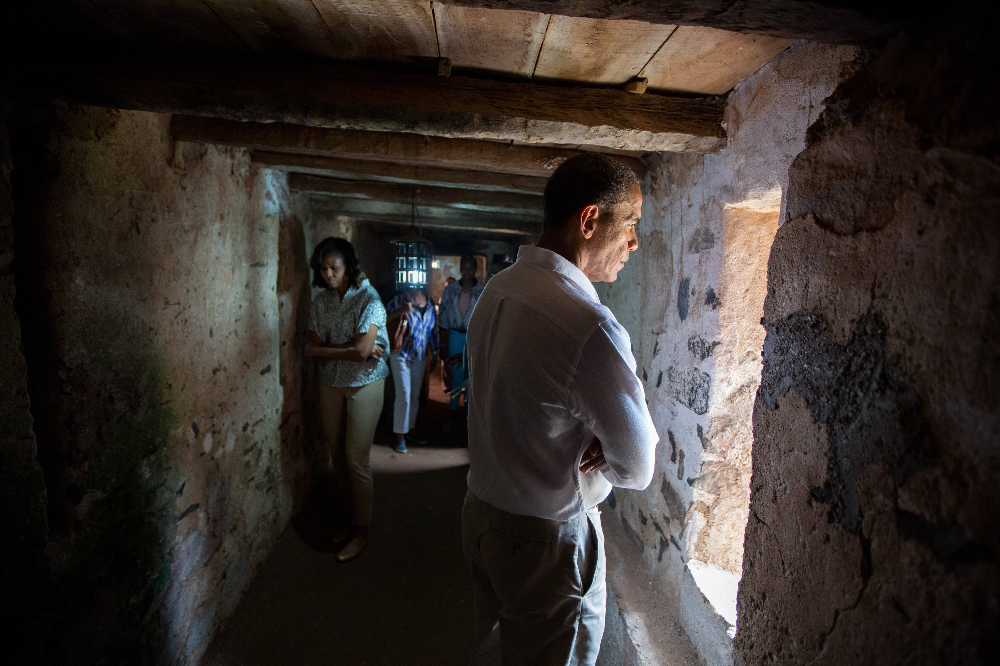

Maison des Esclaves
La Maison des Esclaves1 est un édifice historique situé sur l'île de Gorée, à Dakar au Sénégal. L'actuelle Maison des Esclaves daterait de l'année 1776. Elle est située dans la rue Saint-Germain, sur le côté est de l’île. Elle se trouve face au Musée de la Femme Henriette-Bathily. En dépit des études historiques qui ont montré que la Maison des Esclaves n'aurait pas joué le rôle attribué par certains dans les traites négrières, elle reste un lieu qui revêt pour beaucoup une grande portée symbolique en tant qu'emblème de la traite négrière.
sommaire
- Un lieu de mémoire et une destination touristique
- La consécration par l'UNESCO
- Le récit du conservateur
1)Un lieu de mémoire et une destination touristique
 Chaque jour, à l'exception du lundi, les touristes se pressent à l'entrée. Leur nombre est estimé à 500 par jour19, ce qui est considérable si l'on sait par ailleurs que le plus grand parc national du Sénégal, le Niokolo-Koba, n'en reçoit que 3 000 par an environ. De nombreuses personnalités font le voyage, tels le président du Sénégal Abdoulaye Wade, son prédécesseur Abdou Diouf, les présidents Omar Bongo, Félix Houphouët-Boigny, Luiz Inácio Lula da Silva, François Mitterrand, Jimmy Carter, Bill Clinton et George Bush20, l'empereur Bokassa Ier, l'impératrice Farah Pahlavi et sa mère, le roi Baudouin et la reine Fabiola de Mora y Aragón, Michel Rocard, Jean Lecanuet, Lionel Jospin, Régis Debray, Roger Garaudy, Harlem Désir, Bettino Craxi, Nelson Mandela, Jesse Jackson, Hillary Clinton et sa fille, Breyten Breytenbach, les chanteurs James Brown et Jimmy Cliff, la famille Obama etc. Le pape Jean-Paul II déclare le 22 février 1992 dans son discours à la communauté catholique de l'île : « (...) des hommes, des femmes et des enfants noirs (...) ont été victimes d'un honteux commerce auquel ont pris part des baptisés, mais qui n'ont pas vécu leur foi. (...) Il convient que soit confessé, en toute vérité et humilité ce péché de l'homme contre l'homme, ce péché de l'homme contre Dieu. (...) Nous implorons le pardon du ciel »21. La Maison des Esclaves a notamment inspiré un film, Little Senegal de Rachid Bouchareb, des romans, des livres pour enfants et même une bande dessinée. Le musicien de jazz Marcus Miller a composé Gorée, à la suite de sa visite à la maison des esclaves. En 2016 le rappeur français d'origine sénégalaise Booba y a tourné une partie du clip de DKR22. Sans doute Léopold Senghor avait-il pressenti un tel engouement lorsque, dès 1967, il remercia le conservateur Joseph Ndiaye pour son éloquence et sa « contribution efficace au développement culturel et touristique du Sénégal »23. En octobre 2015, un groupe de jeunes d'Armentières a procédé à des travaux de conservation des nombreux messages laissés par des célébrités dans le bureau du conservateur. En effet, ces témoignages inscrits sur le papier étaient usés par le temps et le climat de l'île. Les messages ont été nettoyés, scannés, imprimés, plastifiés et installés sur des panneaux de bois déplaçables, afin de les joindre aux expositions. Les originaux ont été archivés.
La consécration par l'UNESCO
Dès les années 1960 la détermination de Boubacar Joseph Ndiaye a attisé l'attention des médias, des gouvernants et des organismes internationaux sur une île que l'organisation du premier Festival mondial des arts nègres en 1966 avait déjà sortie de l'anonymat6. Un vaste plan de sauvegarde se met en place. En 1975, Gorée est inscrite sur l'inventaire des monuments historiques du Sénégal et en 1978 sur la liste du patrimoine mondial. Sous l'égide de l'UNESCO, un timbre français consacré à la Maison des Esclaves est émis en 1980 dans la série « Patrimoine mondial »7. Les postes sénégalaises ont, à plusieurs reprises (notamment en 1985, 1994 et 19988) émis des timbres dédiés à la sauvegarde de Gorée et en particulier à la sauvegarde de la Maison des Esclaves. En 1990 celle-ci est restaurée avec l'aide de l'UNESCO, ainsi que de nombreux organismes — dont la fondation France Libertés — et des fonds privés. Cette consécration internationale lui a conféré une apparence de légitimité et l'organisation onusienne est allée jusqu'à la qualifier de « centre historique du commerce triangulaire », la désignant comme « un lieu hautement symbolique de l'histoire des peuples »9.
Le récit du conservateur
Au fil des décennies, les récits de son conservateur 2 Boubacar Joseph Ndiaye ont contribué à faire connaître la Maison des Esclaves dans le monde entier. Cette maison aurait été la dernière esclaverie en date à Gorée. La première remonterait à 1536, construite par les Portugais, premiers Européens à fouler le sol de l'île en 1444. Au rez-de-chaussée se trouvent les cellules (hommes, enfants, chambre de pesage, jeunes filles, inapte temporaire). Dans celles réservées aux hommes, faisant chacune 2,60 m sur 2,60 m, on mettait jusqu’à 15 à 20 personnes, assis le dos contre le mur, des chaînes les maintenant au cou et aux bras. On ne les libérait qu'une fois par jour afin de leur permettre de satisfaire leurs besoins, généralement dans cette maison, ils y vivaient dans un état d'hygiène insupportable. L'effectif dans cette petite maison variait entre 150 à 200 esclaves. L'attente de départ durait parfois près de trois mois, ces esclaves ayant affaire à des voiliers pour leur transport. Dans cette maison, le père, la mère et l'enfant dans les cellules étaient séparés. Un peu à l'écart, à droite du porche d'entrée, se trouve le bureau du maître des lieux, tapissé de documents et de citations humanistes, telles cette déclaration d'Hampâté Bâ : « En Afrique, quand un vieillard meurt, c'est une bibliothèque qui brûle » ou celle-ci de son propre cru : « Qu'à tout jamais, pour la préservation de ces lieux, les générations se souviennent pieusement des souffrances endurées ici par tant d'hommes de race noire ». Tous partaient vers les Amériques, mais le pays de destination dépendait des besoins des acquéreurs, le père pouvait — par exemple — partir en Louisiane aux États-Unis, la mère au Brésil ou à Cuba et l'enfant à Haïti ou aux Antilles. Ils partaient de Gorée sous des numéros de matricule et jamais sous leurs noms africains. Le regard du visiteur est immédiatement attiré par une ouverture lumineuse au milieu du couloir central. Donnant de plain pied sur la côte rocheuse, c'est la porte du « voyage sans retour », là où les esclaves embarquaient pour une vie de souffrances dans le Nouveau Monde, dont beaucoup mourraient en mer, encadrés par des gardiens armés au cas où ils auraient tenté de s'évader. Un large escalier à double flèche conduit à l'étage qui sert surtout aujourd'hui de salle d'exposition. Jusqu'à sa mort en février 20093, l'infatigable octogénaire reprenait son récit4, plusieurs fois par jour, bien déterminé à éveiller la conscience de son auditoire, et son message de compassion et de tolérance faisait mouche le plus souvent. Les touristes noirs américains, auxquels certaines agences d'Amérique du Nord proposent des « Black-History Tours » 5, étaient particulièrement sensibles à ce discours. Les collèges locaux envoyaient leurs élèves l'écouter, par classes entières.